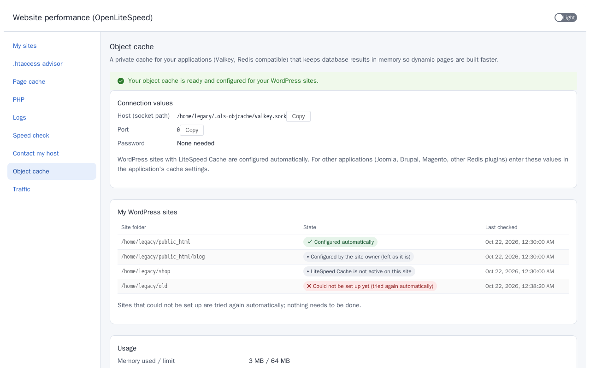

Object cache and WordPress
Every cPanel account can have its own private object cache (Valkey, compatible with Redis). It runs on a Unix socket inside the account's home directory, so only that account's sites can reach it. No password is needed.
Automatic for WordPress with LiteSpeed Cache
Nobody has to turn it on. Every few minutes the product looks through the accounts, a few at a time so the server is not loaded. An account with a WordPress installation and the LiteSpeed Cache plugin gets its own cache, and the plugin's object cache settings are set for it: method Redis, the host and port below, object cache on.
If the site owner already switched the object cache on with the plugin's defaults (host localhost, port 6379, which shows "Connection Test: Failed" because there is no shared Redis), the product replaces those defaults with the account's own socket and the test passes. A site added later, or a plugin activated later, is set up too.


- A host or port the site owner chose is never changed. The page lists such a site as "Configured by the site owner".
- If the cache is switched off for the account or the account is suspended, the plugin's object cache is switched off again, but only on sites where the product had switched it on.
- Your hosting provider can turn the cache off for an account or a package, or turn the automatic mode off for the whole server in WHM. The administrator's decision always wins.

Connection values
| Setting | Value |
|---|---|
| Type | Redis |
| Host | /home/<cPanel user>/.ols-objcache/valkey.sock (the account's home directory; an absolute path) |
| Port | 0 (a Unix socket has no port) |
| Password / username | empty |
| Database | 0 (any of 0 to 15 works) |
Example for the account exampleuser: host /home/exampleuser/.ols-objcache/valkey.sock, port 0. If the home directory is not under /home (for example /home2), use that directory instead.
Setting it by hand in LiteSpeed Cache
Only needed if you prefer to set it yourself. First make sure the cPanel page Object cache says it is running. Then, in WordPress, open LiteSpeed Cache → Cache → [6] Object:
| Field in LiteSpeed Cache | Enter |
|---|---|
| Object Cache | ON |
| Method | Redis |
| Host | /home/<your cPanel user>/.ols-objcache/valkey.sock (the full path, not localhost) |
| Port | 0 (not 6379) |
| Default Object Lifetime | leave as it is (360) |
| Username / Password | empty |
| Redis Database ID | 0 |
| Global Groups, Do Not Cache Groups | leave as they are |
| Persistent Connection | ON |
| Cache Wp-Admin | ON or OFF, as you like |
Press Save Changes. The Status box then shows Redis Extension: Enabled and Connection Test: Passed.
Why not localhost and 6379? Each account has its own private cache that only that account can reach, through the socket file in its home directory. A shared cache on localhost:6379 would let every account see every other account's data, so there is none.
Other applications
The product does not change the settings of other applications. Enter the values above once in the application's own cache settings.
- Joomla: System → Global Configuration → System → Cache: Cache Handler "Redis", Redis Server Host the socket path, Port
0. - Drupal: the
redismodule; insettings.phpset the host to the socket path and the port to0. - Magento 2: in
app/etc/env.php, cache and session backendsrediswithserverthe socket path andport0. - WordPress without LiteSpeed Cache (for example the Redis Object Cache plugin): in
wp-config.phpadddefine('WP_REDIS_SCHEME', 'unix');anddefine('WP_REDIS_PATH', '/home/<cPanel user>/.ols-objcache/valkey.sock'); - Any other application with Redis support: the same host (socket path) and port
0.
The PHP redis extension these need is installed and kept active by the product on every EA4 PHP version.
Good to know
- The cache is limited in memory; the oldest entries are removed first when it is full. Nothing is lost that the site cannot rebuild.
- When the account is suspended the cache stops, and it starts again when the account is unsuspended.
- When the account is removed, the cache and its files are removed with it.